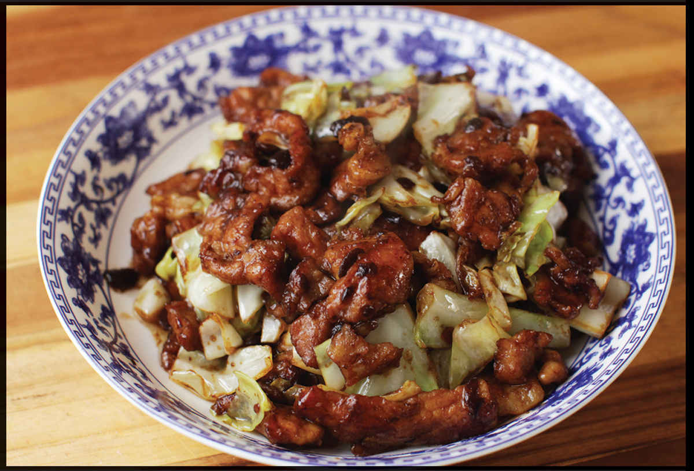

BETTER-THAN-MY-MOM’S CHUNGKING PORK
|
Yield Serves 4 Active Time 15 minutes Total Time 30 minutes |
Thinly sliced fresh pork belly can be used in place of the pork loin or sirloin. |
INGREDIENTS
For the Pork:
1 pound (450 g) boneless pork loin or sirloin, cut into ¼- by 1- by 2-inch pieces (see Note)
1 teaspoon (5 ml) dark soy sauce
1 teaspoon (5 ml) Shaoxing wine or dry sherry
¼ teaspoon (1 g) baking soda
1 teaspoon (3 g) cornstarch
¼ teaspoon (0.5 g) MSG (optional)
For the Sauce:
2 tablespoons (about 12 g) dried fermented black beans (douchi), roughly chopped
2 tablespoons (30 ml) hoisin sauce
2 teaspoons (10 ml) dark soy sauce
2 tablespoons (30 ml) homemade or store-bought low-sodium chicken stock or water
½ teaspoon (1.5 g) hot red pepper flakes or ground Chinese hot chiles
For the Stir-Fry:
3 tablespoons (45 ml) peanut, rice bran, or other neutral oil
3 slices fresh ginger (15 g)
3 medium garlic cloves (8 g), peeled and lightly smashed with the side of a knife or cleaver
6 ounces (170 g) green cabbage, cut into 1½-inch squares (about 3 cups)

DIRECTIONS
1For the Pork: Place the pork in a medium bowl, cover with cold water, and vigorously agitate it. Drain through a fine-mesh strainer set in the sink and press on the chicken with your hands to remove excess water. Return the pork to the bowl and add the soy sauce, wine, baking soda, and cornstarch. Stir vigorously with your fingertips or chopsticks for 30 seconds. Set aside for 15 minutes at room temperature or refrigerate for up to 8 hours.
2For the Sauce: Combine the fermented black beans, hoisin sauce, soy sauce, stock, and pepper flakes in a small bowl and mix with a fork until homogenous.
3BEFORE YOU STIR-FRY, GET YOUR BOWLS READY:
4For the Stir-Fry: Heat a wok over high heat until lightly smoking. Add 1 tablespoon (15 ml) of the oil and swirl to coat. Add one slice of the ginger and one garlic clove and let sizzle for 5 seconds. Immediately add the cabbage and stir-fry until lightly translucent and browned in spots, 1 to 2 minutes. Transfer to a large bowl.
5Wipe out the wok and return to high heat until lightly smoking. Add 1 tablespoon (15 ml) of the remaining oil and swirl to coat. Add one more slice of ginger and one more garlic clove and let sizzle for 5 seconds. Immediately add half of the pork and stir-fry until the pork is no longer pink and is mostly cooked through, about 1 minute. If using belly, cook until the belly begins to crisp lightly around the edges, about 2 minutes. Transfer the cooked pork to the bowl with the cabbage, wipe out the wok, and repeat with the remaining oil, ginger, garlic, and pork.
6Return all the pork and cabbage to the wok. Add the sauce mixture and toss until the cabbage and pork are coated evenly. Transfer to a serving platter and serve immediately with steamed rice. (You can pick out the ginger slices and garlic cloves before serving if desired.)